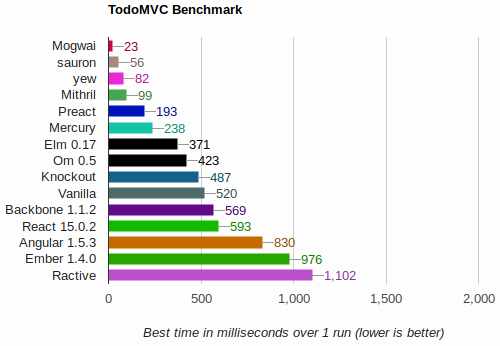

Welcome!
Welcome to a tutorial about writing front end web applications using Rust. Roughly I've broken this up into a couple sections:
- A hard and fast introduction to Rust
- A hard and fast introduction to Rust-to-WASM compilation and using web-sys to write Rust that runs in the browser.
- A tour of a few libraries and frameworks to use that make application development generally easier (I hope).
This guide is being tentatively hosted at schell.github.io/intro-to-rust-web-dev.
Let's dive in! 🏊🏽
A Lightspeed Introduction to Rust

Rust is a programming language.
As of this writing it's at version 1.40, only ~9 years old!
Compare that to
- JavaScript, 1995 ~24 years old
- Haskell, 1990 ~30 years old
Mozilla was the first investor in Rust, being heavily involved in the development of the language. Coincedentally Mozilla was also heavily involved in the development of JavaScript (not just) through its beginnings as an arm of the Netscape Communications Corporation.

People who write Rust are endearingly called "Rustaceans".
Rust has a (unofficial) mascot named Ferris.

Rust's Features
-
compiled w/ the
rustccompiler, which is self-hosted (written in Rust) -
a strong, static typing discipline, similar in feel to Haskell 98 but different
-
imperative or functional style, a bit like Scala and Swift. You can mix'n'match your functional and imperative code - but EVERYTHING IS IN IO. (Opinion): this is not bad.
-
eager evaluation of expressions.
-
type variables or generics
-
traits (which are a bit like interfaces or type classes, less like classes but you get the point)
-
a new, novel concept called a "borrow checker", which obviates garbage collection (more on this later, because it is a big deal). It makes memory management rather slick and easy.
-
macros! The macro system provides compile-time metaprogramming much like TemplateHaskell, but unlike the Haskell community, the Rust community seems very inclined to use macros whenever they feel like it (I personally like this)
Rust's Non-features
-
No higher-kinded types ... (Opinion): this means there are no practical implementations of category theory concepts like Category, Arrow, Functor, Monoid, Monad, etc. This is a good thing, mostly.
-
No classical inheritance (and no prototypal inheritance, for that matter). This is good.
Ecosystem
Rust has a very helpful and friendly community as well as a thriving, though a bit fledgling ecosystem, backed by the cargo package manager. Packages (libraries) are colloquially called "crates". Crates are uploaded to the crates.io package repository where they are hosted over HTTP, along with documentation.
Hint: If you use duckduckgo as your search engine you can search for crates using bang syntax like
!crates mogwai, which will warp you straight to search results for that crate on crates.io (in this case that's themogwaicrate).
You can find help at the rust sub-reddit, the
freenode IRC ##rust channel or more.
Ok, enough - what does Rust look like?
Rust Examples
Next we'll see some examples of actual Rust code.
Functions, Values and Bindings
Rust is C-like, with braces and a mostly imperative style. Here's hello world:
fn main() { let name = "world"; print!("Hello {}", name); }
let bindings allow us to bind names to values, and names may be rebound:
fn main() { let x:f32 = 1.0; let y:f32 = 2.5; let name:f32 = x + y; let name:String = format!("Number {:.2}", name); print!("Hello {}", name); }
Mutability
Mutable values are denoted using the mut keyword within a let binding, or in
the parameters of a function or pattern match (basically anywhere you can name a
value):
fn main() { let mut name = "unused_name"; name = "Cuco"; print!("Hello {}", name); }
References
Like C and C++, Rust supports passing values by value or by reference. A
reference is a pointer to a value. Unlike those languages, passing a value
"invokes" the borrow checker. The borrow checker ensures that no more than one
mutable reference to a value is obtained at any one time. This prevents a lot of
bugs. To pass a value by reference, prefix the name with &. To pass a value by
mutable reference, prefix the name with &mut:
fn add_one_mut(x: &mut i32) { // Here we dereference the variable to add one to its value *x += 1; } fn main() { let mut x = 6; add_one_mut(&mut x); // <- see that we're passing a mutable reference add_one_mut(&mut x); println!("Hello {}", x); }
Here we'll try to hold one mutable reference and pass another at the same time:
fn add_one_mut(x: &mut i32) { *x += 1; } fn main() { let mut x = 6; // Hold a mutable ref to x let may_mut_x:Option<&mut i32> = Some(&mut x); // Remove the comment on the next line... // add_one_mut(&mut x); println!("Hello {:?}", may_mut_x); }
But you may have as many immutable references as you like, so long as none of those references try to "outlive" the original value.
/// Returns one plus the value of the reference passed fn add_one(x: &i32) -> i32 { *x + 1 } fn main() { let x = 3; let may_x_ref = Some(&x); let y = add_one(&x); let z = add_one(&y); println!("Hello {} {} {} {:?}", x, y, z, may_x_ref); }
Data Types
Rust has two kinds of data structures.
Struct
Like Haskell's records, without the record field update baggage.
#![allow(unused_variables)] fn main() { struct Person { name: String } struct Place { name: String, latitude: f32, longitude: f32, } struct Thing { description: String } }
Enum
Enums can be C-like:
#![allow(unused_variables)] fn main() { enum Noun { Person, Place, Thing } }
Or they can be more like Haskell's sum types:
#[derive(Debug)] struct Person { name: String } #[derive(Debug)] struct Place { name: String, latitude: f32, longitude: f32, } #[derive(Debug)] struct Thing { description: String } #[derive(Debug)] enum Noun { Person(Person), Place(Place), Thing(Thing) } fn main() { let thing = Thing { description: "A broken can opener".to_string() }; let mut noun = Noun::Thing(thing); println!("{:#?}", noun); match &mut noun { Noun::Thing(thing) => { thing.description = "A can't opener".to_string() } _ => {} } println!("{:#?}", noun); }
Methods
Just like in C++ and Java, Rust has methods. Methods are functions that appear to "live inside" the data they operate on.
struct Circle { x: f64, y: f64, radius: f64, } impl Circle { /// the `self` keyword is analogous to `this` in C++ and Javascript, /// or `self` in Objective-C. It means "the value this function was /// called on". /// /// Notice how we pass an immutable reference to the circle this /// function is called on. We could also pass a mutable reference /// which would allow the function to mutate the circle in-place. fn area(&self) -> f64 { std::f64::consts::PI * (self.radius * self.radius) } } fn main() { let c = Circle { x: 0.0, y: 0.0, radius: 2.0 }; println!("{}", c.area()); }
Traits
Traits allow us to create an interface that types can implement (or not).
struct Circle { x: f64, y: f64, radius: f64, } trait HasArea { fn area(&self) -> f64; } impl HasArea for Circle { fn area(&self) -> f64 { std::f64::consts::PI * (self.radius * self.radius) } } fn print_area<T: HasArea>(shape: T) { println!("This shape has an area of {}", shape.area()); } fn main() { let c = Circle { x: 0.0f64, y: 0.0f64, radius: 1.0f64, }; print_area(c); }
Being Functional
Lambdas!
Rust is a functional language in that it supports creating, storing and passing anonymous functions as parameters to other functions.
fn main() { let add_one = |x: &i32| -> i32 { *x + 1 }; let add_one_mut = |x: &mut i32| { *x += 1 }; let mut n = add_one(&0); add_one_mut(&mut n); }
Options, folds, maps and more!
Through the use of Traits we
can use functions like map, filter, fold and friends on many different
structures.
Map the inner value of an Option type:
fn main() { let may_i32:Option<i32> = Some(88); let may_string:Option<String> = may_i32 .map(|n| format!("{}", n)); println!("{:?}", may_string); }
Fold over a vector and sum the elements:
fn main() { let items:Vec<i32> = vec![0, 1, 2, 3]; let sum = items .iter() .fold( 0, |acc, i:&i32| acc + *i // <- look, you don't always need brackets on lambdas ); println!("The sum of {:?} is {}", items, sum); }
Try a filter before the sum:
fn main() { let items:Vec<i32> = vec![0, 1, 2, 3]; let sum = items .iter() .filter(|i| **i <= 2) // <- keep i if it is <= 2 .fold( 0, |acc, i| acc + *i ); println!("The sum of numbers less that or equal to 2 in {:?} is {}", items, sum); }
Do the same thing but with an imperative style:
fn main() { let items:Vec<i32> = vec![0, 1, 2, 3]; let mut sum = 0; for i in items.iter() { if *i <= 2 { sum += i; } } println!("The sum of numbers less that or equal to 2 in {:?} is {}", items, sum); }
Helpful Links
Rust in the Browser
Rust cross-compiles to WebAssembly.
You'll need wasm-pack to convert your Rust into WASM and to shim it into an html file.
Once you have wasm-pack you can use cargo generate (which can be installed
with cargo install cargo-generate) to create a template project:
cargo generate --git https://github.com/schell/mogwai-template.git
The cd into your new project and:
wasm-pack build --target no-modules
Then, if you don't already have it, cargo install basic-http-server or use your
favorite alternative to serve the files for your app:
basic-http-server -a 127.0.0.1:8888
With wasm-pack you'll be able to create Rust packages that can be consumed and
published with npm.
web-sys
web-sys provides bindings for all Web APIs and is a procedurally generated crate from WebIDL.
It's the defacto way to interact with a browser's DOM and other APIs.
It's part of a bigger project called wasm-bindgen.
A fair warning
Browser APIs are inherently un-safe. Any value in JavaScript may be null. As a
result strong, static typed languages have to jump through hoops to assure that
the programmer is working with the values they expect. In Rust this means doing a
lot of maping and unwraping. The good news is that once you have a value, you
really have it.
Comparisons
The web-sys crate is the low level crate that other Rust libraries and
frameworks build on top of. It is the bridge between Rust and your browser.
It's a bit like Haskell's jsaddle and jsaddle-dom, which we use at Formation.ai.
It's also a bit like interacting with your browser in JavaScript using the web dev console. Very useful, but probably not the best way to structure large web applications.
Alert 🚨
Lets write an alert.
A note on using web-sys APIs
We can find the API we need using a search within the web-sys docs:
pub fn alert_with_message(&self, message: &str) -> Result<(), JsValue>The alert() method
MDN Documentation
This API requires the following crate features to be activated: Window
This last bit about "This API require the following..." is important. web-sys
is huuuuuge because it contains a lot of APIs. To cut down on compile times, etc.
the authors decided to have each API be opt-in, so you must add that API to your
Cargo.toml's features list. Luckily we have a project template that includes
this stuff (along with a little note):
[dependencies.web-sys]
version = "0.3"
# Add more web-sys API's as you need them
features = [
"HtmlInputElement",
]
To use the Window API we have to add "Window" to the list of features:
features = [
"HtmlInputElement",
"Window"
]
Now we can write our little app:
use wasm_bindgen::prelude::*;
use web_sys::window;
pub fn main() -> Result<(), JsValue> {
let window = window().unwrap();
window.alert_with_message("Hello from WASM!")
}
Alert with button ⚙️
Now let's look at building some DOM.
First we'll need to add some more APIs as features to our Cargo.toml:
features = [
"Document",
"Element",
"EventTarget",
"HtmlElement",
"Node",
"Window",
]
Then we can write our app:
use wasm_bindgen::prelude::*;
use wasm_bindgen::JsCast;
use web_sys::{
window,
Element,
HtmlElement,
Node
};
pub fn main() -> Result<(), JsValue> {
// Get a handle to our window and document
let window = window().unwrap();
let document =
window
.document()
.unwrap();
// Create the button element
let button:Element =
document
.create_element("button")
.unwrap();
button
.dyn_ref::<HtmlElement>()
.unwrap()
.set_inner_text("Trigger");
// Get a handle on the document's body
let body =
document
.body()
.unwrap();
// Add the button to the DOM
body
.dyn_into::<Node>()
.unwrap()
.append_child(&button)
.unwrap();
// Create a Javascript closure that will trigger an alert
let cb =
Closure::wrap(Box::new(|| {
web_sys::window()
.unwrap()
.alert_with_message("You hit the button!")
.unwrap();
}) as Box<dyn FnMut()>);
// Add the closure as a listener that procs on click
button
.add_event_listener_with_callback("click", cb.as_ref().unchecked_ref())
.unwrap();
// Usually Rust would hold on to the closure (or else it is dropped)
// but here we'll forget about it, which means it will be around forever.
cb.forget();
Ok(())
}
And see our work completed!
That's an awful lot of code for a simple button that triggers an alert, but it's fast and it's cautious.
Helpful Links for Rust -> WASM
Frameworks
Phwew! You've made it this far. In the last section we saw how complicated a simple app can be. It takes an awful lot of code to simply create a button and attach a callback. Most of that code is about safely acquiring objects and calling functions, or have to do with marshalling values between Rust and the browser.
It would be a bummer to have to write this much code for every user experience, so let's take a quick tour of libraries that will abstract away the complexity.
| library | has vdom | is elm-like | low level (does the user see web-sys?) |
|---|---|---|---|
| gloo | yes | ||
| mogwai | sometimes | kinda | |
| sauron | yes | yes | |
| yew | yes | yes |
Gloo
Gloo is a library that adds some much needed clean-up on top of web-sys. It
makes writing web-sys code look a lot like writing regular javascript, only in
Rust!
Goals
- fast
- reliable
- small (code size)
- idiomatic
Example
use gloo::{events::EventListener, timers::callback::Timeout};
use wasm_bindgen::prelude::*;
pub struct DelayedHelloButton {
button: web_sys::Element,
on_click: events::EventListener,
}
impl DelayedHelloButton {
pub fn new(document: &web_sys::Document) -> Result<DelayedHelloButton, JsValue> {
// Create a `<button>` element.
let button = document.create_element("button")?;
// Listen to "click" events on the button.
let button2 = button.clone();
let on_click = EventListener::new(&button, "click", move |_event| {
// After a one second timeout, update the button's text content.
let button3 = button2.clone();
Timeout::new(1_000, move || {
button3.set_text_content(Some("Hello from one second ago!"));
})
.forget();
});
Ok(DelayedHelloButton { button, on_click })
}
}
mogwai
Mogwai goes one step further than Gloo and provides patterns that make creating
DOM and interacting with it declarative and function. You still interact with
web-sys, but there are no event listeners or callbacks to deal with. It is
inspired by Haskell and Elm, so it looks a bit functional and components use a
familiar Elm update concept.
Goals
- declarative DOM
- elm-like components
- explicit updates
- small (code size)
- fast
Example
Here is an example of a button that counts its own clicks. Simple gizmos like this don't need the elm-like component update scenario, so it looks very functional:
extern crate mogwai;
use mogwai::prelude::*;
let (tx, rx) =
txrx_fold(
0,
|n:&mut i32, _:&Event| -> String {
*n += 1;
if *n == 1 {
"Clicked 1 time".to_string()
} else {
format!("Clicked {} times", *n)
}
}
);
button()
.style("cursor", "pointer")
.rx_text("Clicked 0 times", rx)
.tx_on("click", tx)
.build().unwrap()
.run().unwrap()
Here is an example of the same thing using an elm-like approach:
use mogwai::prelude::*;
pub struct Button {
pub clicks: i32
}
#[derive(Clone)]
pub enum ButtonIn {
Click
}
#[derive(Clone)]
pub enum ButtonOut {
Clicks(i32)
}
impl Component for Button {
type ModelMsg = ButtonIn;
type ViewMsg = ButtonOut;
fn update(
&mut self,
msg: &ButtonIn,
tx_view: &Transmitter<ButtonOut>,
_subscriber: &Subscriber<ButtonIn>
) {
match msg {
ButtonIn::Click => {
self.clicks += 1;
tx_view.send(&ButtonOut::Clicks(self.clicks))
}
}
}
fn builder(
&self,
tx: Transmitter<ButtonIn>,
rx: Receiver<ButtonOut>
) -> GizmoBuilder {
button()
.style("cursor", "pointer")
.rx_text("Clicked 0 times", rx.branch_map(|msg| {
match msg {
ButtonOut::Clicks(n) => format!("Clicked {} times", n)
}
}))
.tx_on("click", tx.contra_map(|_| ButtonIn::Click))
}
}
Button{ clicks: 0 }
.into_component()
.build().unwrap()
.run().unwrap()
sauron
Sauron abstracts out web-sys completely in favor of a close clone of Elm. There
are no event listeners and callbacks.
Example
use sauron::html::attributes::*;
use sauron::html::events::*;
use sauron::*;
use sauron::Component;
use sauron::Node;
use sauron::Program;
use sauron::Cmd;
use wasm_bindgen::prelude::*;
use log::*;
#[derive(Debug, PartialEq, Clone)]
pub enum Msg {
Click,
}
pub struct App {
click_count: u32,
}
impl App {
pub fn new() -> Self {
App { click_count: 0 }
}
}
impl Component<Msg> for App {
fn view(&self) -> Node<Msg> {
div!(
[class("some-class"), id("some-id"), attr("data-id", 1)],
[
input!(
[
class("client"),
type_("button"),
value("Click me!"),
onclick(|_| {
trace!("Button is clicked");
Msg::Click
}),
],
[],
),
text!("Clicked: {}", self.click_count),
],
)
}
fn update(&mut self, msg: Msg) -> Cmd<Self, Msg> {
trace!("App is updating from msg: {:?}", msg);
match msg {
Msg::Click => {
self.click_count += 1;
Cmd::none()
}
}
}
}
yew
Yew is one of the larger frameworks for building web apps in Rust. It seems to be more about multi-threading and concurrency, though at the time of this writing WASM in your browser is single threaded AFAICT.
Example
use yew::{html, Component, ComponentLink, Html, ShouldRender};
struct Model {
link: ComponentLink<Self>,
}
enum Msg {
DoIt,
}
impl Component for Model {
// Some details omitted. Explore the examples to see more.
type Message = Msg;
type Properties = ();
fn create(_: Self::Properties, link: ComponentLink<Self>) -> Self {
Model { link }
}
fn update(&mut self, msg: Self::Message) -> ShouldRender {
match msg {
Msg::DoIt => {
// Update your model on events
true
}
}
}
fn view(&self) -> Html {
let onclick = self.link.callback(|_| Msg::DoIt);
html! {
// Render your model here
<button onclick=onclick>{ "Click me!" }</button>
}
}
}
fn main() {
yew::start_app::<Model>();
}
Benchmarks
Using the canonical TodoMVC for most of these libraries (and more) you can bench their performance with regard to DOM updates. Try it yourself here. Here are the results I got:

I believe mogwai is fastest here specifically because of the lack of vdom. In
my opinion it hits a good power-to-weight ratio and achieves its goals. I'm
biased though because I wrote it, lol 😊.